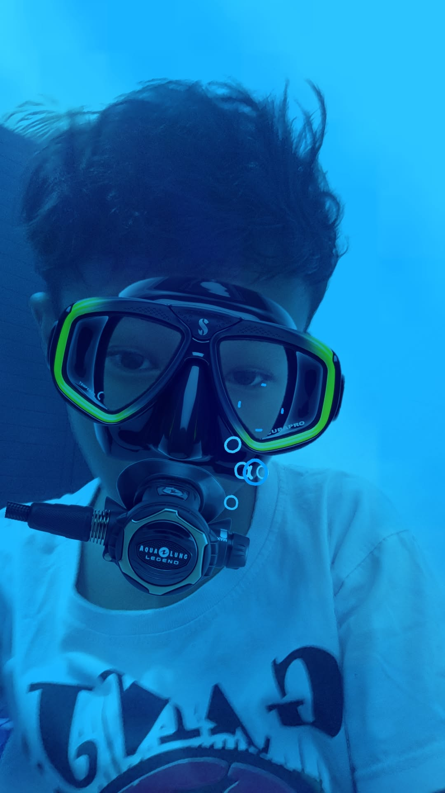

Halo, Saya Farel Juna Albiansyah
Seorang pelajar yang antusias mempelajari |
Tentang Saya
"Saya adalah seorang pelajar yang memiliki ketertarikan pada dunia teknologi, khususnya dalam bidang pemrograman, pembuatan website, dan pengembangan aplikasi. Saya memilih jurusan PPLG karena ingin memahami bagaimana sebuah perangkat lunak dan gim dibuat dari awal hingga dapat digunakan. Saya senang mempelajari hal-hal baru, mencoba membuat program sederhana, serta mengembangkan kemampuan dalam coding dan teknologi. Melalui jurusan PPLG, saya berharap dapat meningkatkan keterampilan, kreativitas, dan kemampuan dalam memecahkan masalah sehingga dapat menghasilkan karya digital yang bermanfaat."
Hobi
"Saya adalah seorang pelajar yang memiliki ketertarikan pada dunia teknologi, khususnya dalam bidang pemrograman, pembuatan website, dan pengembangan aplikasi. Saya memilih jurusan PPLG karena ingin memahami bagaimana sebuah perangkat lunak dan gim dibuat dari awal hingga dapat digunakan. Saya senang mempelajari hal-hal baru, mencoba membuat program sederhana, serta mengembangkan kemampuan dalam coding dan teknologi. Melalui jurusan PPLG, saya berharap dapat meningkatkan keterampilan, kreativitas, dan kemampuan dalam memecahkan masalah sehingga dapat menghasilkan karya digital yang bermanfaat."
Riwayat Pendidikan
"Perjalanan pendidikan saya dimulai di sekolah dasar di SDN 1 Ngrawan, Nganjuk. Setelah itu, saya bersekolah di SMPN 1 Berbek, Nganjuk. Saat ini, saya melanjutkan pendidikan di SMKN 1 Nganjuk dengan mengambil jurusan Pengembangan Perangkat Lunak dan Gim (PPLG) karena saya memiliki minat pada teknologi, komputer, dan pemrograman. Saya berharap ilmu yang saya dapatkan dapat menjadi bekal untuk mencapai cita-cita dan masa depan yang lebih baik."
Kutipann
"Saya menyukai beberapa kata-kata dari Timothy Ronald karena banyak membahas tentang kerja keras, keberanian mengambil kesempatan, dan pentingnya membangun masa depan sejak muda. Salah satu prinsip yang saya sukai adalah “jangan hanya mengejar uang, tetapi bangun kemampuan yang memiliki nilai.” Menurut saya, kita juga harus berani keluar dari zona nyaman, terus belajar, dan tidak takut gagal. “Gagal bukan alasan untuk berhenti, tetapi kesempatan untuk belajar dan menjadi lebih baik.” Kata-kata tersebut membuat saya termotivasi untuk lebih serius dalam belajar, mengembangkan kemampuan, dan memiliki tujuan yang jelas untuk masa depan."
Proyek Saya
🌐 Hoby
Hoby saya bermain sepak bola dan berpetualang.
HobySportNature🫧Skill
Saya bisa mengerjakan banyaak tugas dalam sekali jalan(multitasking).
Skills🎨 Mimpi
Menjadi pembisnis, programmer dan investor.
MoneyFinancial